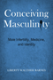
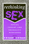
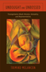
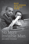

|

|
Conceiving Masculinity
Male Infertility, Medicine, and Identity
Barnes, Liberty Walther
British Sociological Association's Foundation for the Sociology of Health and Illness Book Prize, 2015
|

|
Rethinking
Sex
Social Theory and Sexuality Research
edited
by Connell, R. W. and G. W. Dowsett
Sex and Gender Section Award for Distinguished Contribution
to the Study of Sex and Gender, American Sociological Association,
1995 |

|
Q
& A
Queer in Asian America
edited
by Eng, David L. and Alice Y. Hom
Book Award from The Association for Asian American Studies,
2001
Honorable Mention for Outstanding Books Awards, Gustavus Myers
Center for the Study of Bigotry and Human Rights in North America,
1999
Lambda Literary Award for Best Book in Lesbian and Gay Anthologies/Non-Fiction,
1998 |

|
Transfeminist Perspectives in and beyond Transgender and Gender Studies
edited by Anne Enke Lambda Literary Award for Best Book in Transgender Nonfiction,
2013 |

|
The
Story of Reo Joe
Work, Kin, and Community in Autotown, U.S.A.
Fine,
Lisa M.
Cugnot Award of Distinction, 2005
Selected for inclusion on the list of Michigan Notable Books, 2005
Chosen by the Adult Non-fiction Committee of the Society of Midland
Authors as the first runner-up, 2004-5 |

|
The Temp Economy
From Kelly Girls to Permatemps in Postwar America
Hatton, Erin, foreword by Nelson Lichtenstein
Honorable Mention, Labor and Labor Movements Section of the American Sociological Association, 2012 |

|
Running
Scared
Masculinity and the Representation of the Male Body
Lehman,
Peter
Book Alert's University Press Book of Choice, November,
1993 |

|
Unbought and Unbossed
Transgressive Black Women, Sexuality, and Representation
Melancon, Trimiko
College Language Association Creative Scholarship Book Award, 2016
|

|
Terrorizing Latina/o Immigrants
Race, Gender, and Immigration Politics in the Age of Security
Sampaio, Anna
American Political Science Association's Latino Politics Best Book Prize, 2016
|

|
No More Invisible Man
Race and Gender in Men's Work
Wingfield, Adia Harvey
Distinguished Book Award from the American Sociological Association's (ASA) section on Race, Gender and Class, 2014
Richard A. Lester Prize from the Industrial Relations Section at Princeton University, 2014 |
|